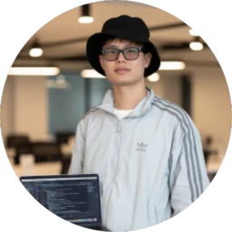

About Me
I'm a software engineer focused on building AI-powered developer tools and infrastructure. Currently working as an AI Agent Engineer at Isoform AI, building the coding agent Yansu from the ground up.
Previously, I was a founding engineer at CurieTech AI where I led a 4-person engineering team building core product experience for an AI coding startup. Before that, I worked at Tencent Music on cross-platform rendering engines and real-time gaming infrastructure, and contributed to Rocket.Chat as part of Google Summer of Code.
Experience
- Isoform AI - AI Agent Engineer (2025 - Present)
- CurieTech AI - Founding Engineer (2023 - 2025)
- Tencent Music - Software Engineer (2021 - 2023)
- Rocket.Chat - Software Engineer, GSoC (2019 - 2021)
Skills
- Languages: TypeScript, JavaScript, Python, Java
- Frontend: React, React Native, Next.js, Custom Renderers
- Backend: FastAPI, Node.js, PostgreSQL, Redis, gRPC
- Infrastructure: AWS, Kubernetes, Docker, CI/CD
Education
- B.S. Computer Science, Anhui University (2017 - 2021)